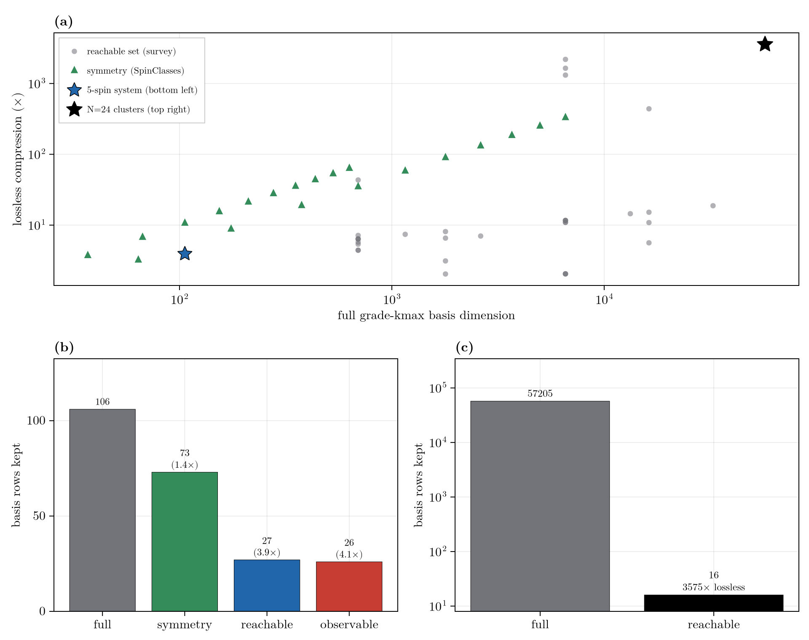
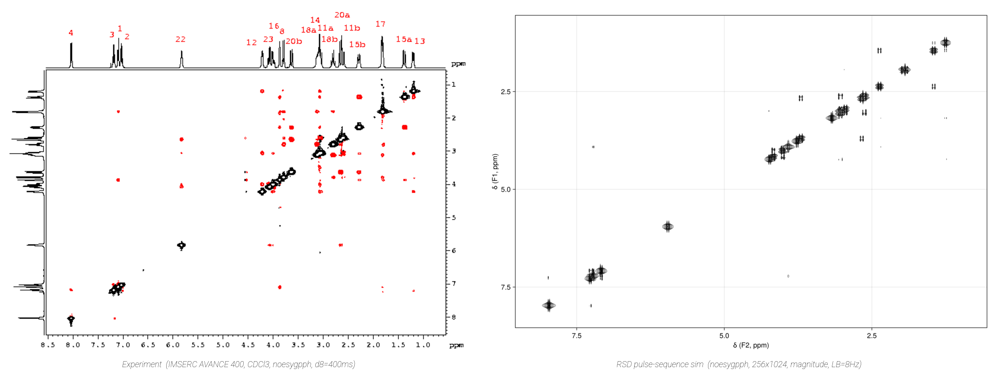

Reachability, Control, and the Adaptive Basis
The restricted Liouvillian is a linear control system, $\dot c = \mathcal{L}_0 c + \sum_k u_k(t)\,\mathcal{L}_k c$: a drift generator plus control channels that a pulse sequence or a Modulation switches on. Within a fixed grade (Grade Truncation and Polynomial State Space Scaling) most strings still carry no amplitude for a given state, observable, and schedule. Three questions recur: which strings the dynamics can populate, which the measurement can resolve, and when a truncation loses nothing. The answers are six sets in two dual families (an input side and an output side), all generated by one algebraic object, the dynamical Lie algebra; a control input enters by enlarging the input-side orbit from the reachable set to the controllable set. This page defines those sets, shows how pulse sequences, shaped modulation, and feedback specify the control input, and turns the orbits that input generates into concrete lossless and lossy basis reductions and the adaptive basis.
The Dynamical Lie Algebra
The generators of the dynamics are the Hamiltonian terms and the jump operators. Their repeated commutators span the dynamical Lie algebra (DLA): the directions the evolution can generate from any starting point. The DLA is fixed by the coupling topology rather than the spin count, and it is known before any propagation.
\[\mathfrak{g} = \langle\, \text{generators} \,\rangle_{\text{Lie}} = \operatorname{span}\{\, g_i,\ [g_i, g_j],\ [g_i,[g_j,g_k]],\ \dots \,\}.\]
generators = collect(keys(H)) # the Hamiltonian's Pauli strings (Vector{PauliLabel})
d = dla_dimension(N, generators) # dimension of the DLA; compare against basis_size(N, k)The three input-side sets below are DLA orbits of a starting state. The three output-side sets are DLA orbits of an observable under the adjoint. The higher-spin DLA is rank-resolved; see Higher-Spin.
System-Theoretic Sets
Which strings matter within the grade is a linear-systems question, with three levels on each of two dual sides. The input side asks which strings the dynamics populate from the state; the output side mirrors it under the adjoint $\mathcal{L}^{\dagger}$, asking which strings reach the measurement.
- Reachable / observable (the basic pair). The reachable set is the smallest $\mathcal{L}$-invariant subspace containing the state's support, so no amplitude leaves it and restricting to it is exact. Its dual is the $\mathcal{L}^{\dagger}$-invariant subspace containing the observable's support. Their intersection, the strings on a path from state to observable, is the smallest basis exact for $\langle O(t)\rangle$.
- Controllable / reconstructable (driven, or read from the past). Drives enlarge the reachable set to the controllable set, flooded structurally because the schedule is known ahead. Reading the record from the past instead of the future gives the reconstructable set; $e^{t\mathcal{L}}$ is invertible, so for a continuous generator it coincides with the observable set.
- Stabilizable / detectable (stability-relaxed). A string the control cannot reach is harmless if it decays on its own, so relaxation lets such transients drop out of the basis. This Kalman relaxation is the case that bites: over a finite window the modes with negative real part fall below threshold and truncation drops them.
stabilizableanddetectablereport a graded verdict on the complement block $\mathcal{Q}\mathcal{L}\mathcal{Q}$ (experimental, dense).
| Set | Side | What it holds | Hook |
|---|---|---|---|
| Reachable | input | strings populated from $c_0$ | reachable_basis |
| Controllable | input, driven | strings the drives can populate | reachable_basis, reachable_bases |
| Stabilizable | input, stability | controllable, or uncontrollable and decaying | stabilizable |
| Observable | output | strings that influence $\langle O\rangle$ | observable_basis |
| Reconstructable | output, past | present strings pinned by past output | = observable_basis (continuous time) |
| Detectable | output, stability | observable, or unobservable and decaying | detectable |
The stability-relaxed level is the systems reading of the Nakajima-Zwanzig Formalism Markovian limit: the kernel coupling the discarded subspace back decays with the spectrum of $\mathcal{Q}\mathcal{L}\mathcal{Q}$, so a stable discarded subspace keeps the memory short. The two sides meet in the minimal realization, the strings that are both reachable and observable; it is the smallest basis that carries signal from $c_0$ to $\langle O\rangle$, and the pruning below computes it.
RestrictedSpinDynamics.stabilizable — Function
stabilizable(N, kmax, H, seeds; jumps=[], clusters=nothing, atol=1e-9, level=:abscissa, transient_tol=1.0)
-> (; verdict::Symbol, stabilizable::Bool, alpha, omega, kreiss, kreiss_upper,
transient_peak, kernel_peak, kernel_integral, controllable_dim, complement_dim)Stability-relaxed verdict from the dense, non-normal spectrum of the complement block; a small-system tool like linearize / propagate_dense, and the API may change.
Is the restricted system stabilizable from seeds? The dynamics populate only the reachable set of strings; the uncontrollable strings are everything else, and stabilizable asks whether all of them decay on their own. If they do, truncation that drops them is safe; if any persists, it is an uncontrollable mode that never relaxes. It takes the reachable set as the controllable subspace (reachable_labels; pass a (basis, c0) seed) and analyzes the complement block Q𝓛Q, the uncontrollable strings. Because 𝓛 is non-normal the spectral abscissa alpha (max Re λ) governs only the long-time rate, so the verdict is graded:
alpha >= -atol->:unstable(an uncontrollable, persistent string).alpha < -atol,omega < 0->:stable_monotone: the numerical abscissaomegarules out transient growth.alpha < -atol,omega >= 0->:stable_asymptotic(upgraded to:stable_transientatlevel=:transientwhentransient_peak > 1 + transient_tol).
Boolean stabilizable = alpha < -atol. level=:transient additionally fills the Kreiss bracket kreiss/kreiss_upper (rigorous two-sided K <= sup_t ||e^{tau Q𝓛Q}|| <= kreiss_upper = e·n·K), the measured transient_peak, and the Nakajima-Zwanzig kernel_peak/kernel_integral (all nothing at the cheap default :abscissa). A verdict, not a lossless keep-set (no stabilizable_basis). Dual of detectable.
Examples
julia> H = hamiltonian(jcoupling(2, 1, 2, 5.0));
julia> c0 = state(restricted_basis(2, 2), polarized(1:2, :z));
julia> r = stabilizable(2, 2, H, (restricted_basis(2, 2), c0));
julia> r.controllable_dim + r.complement_dim == length(restricted_basis(2, 2))
trueRestrictedSpinDynamics.detectable — Function
detectable(N, kmax, H, observables; jumps=[], clusters=nothing, atol=1e-9, level=:abscissa, transient_tol=1.0)
-> (; verdict::Symbol, detectable::Bool, alpha, omega, kreiss, kreiss_upper,
transient_peak, kernel_peak, kernel_integral, observable_dim, complement_dim)Stability-relaxed verdict from the dense, non-normal spectrum of the complement block; a small-system tool like linearize / propagate_dense, and the API may change.
Is the restricted system detectable through observables? The observables see only some strings; the unobservable strings are everything else, and detectable asks whether all of them decay on their own. An unobservable string that relaxes to zero is safe to drop; one that persists corrupts the long-time result while never showing in the signal.
This is the output-side dual of stabilizable: it takes the observable set (observable_labels) as the retained subspace and grades the complement block Q𝓛Q (the unobservable strings) with the same non-normal analysis, verdict symbols, Boolean detectable = alpha < -atol, and level-gated fields (see stabilizable for the graded verdict and the transient metrics). A verdict, not a keep-set.
Examples
julia> H = hamiltonian(jcoupling(2, 1, 2, 5.0));
julia> r = detectable(2, 2, H, total_spin_op(2, 3));
julia> r.observable_dim + r.complement_dim == length(restricted_basis(2, 2))
trueThe next three sections specify the control input, a pulse sequence or a shaped modulation, that fixes the controllable set; the sections after that turn that input into reachability-based reductions and the adaptive basis.
Piecewise-Constant Sequences
The simplest control is a train of intervals, each with a constant Hamiltonian: a hard pulse applies a strong resonant field for a fixed time, a delay applies only the drift, and an acquire samples an observable under the drift. A pulse of flip angle $\theta$ driven at Rabi frequency $\omega_1$ lasts $\theta/\omega_1$:
\[H_{\text{pulse}} = H_0 + \omega_1 \sum_s I_x^{(s)}, \qquad \theta = \omega_1\,\tau .\]
Dissipation, when present, acts identically in every interval. Transverse pulses populate the transverse plane and break any longitudinal-sector symmetry, so a driven problem must carry a full or banded basis rather than a fixed sector. The sequence composer assembles a Vector{Segment} that propagate_sequence runs, here a spin echo (excite, evolve, refocus, acquire):
N = 2
b = restricted_basis(N, N)
Hd = hamiltonian(zeeman(N, [0.0, 10.0]), jcoupling(N, 1, 2, 5.0))
c0 = state(b, polarized(1:N, :z))
seq = sequence(N, Hd,
pulse(1:N; θ = pi/2, label = "90x"),
delay(0.05),
pulse(1:N; θ = pi, label = "180x"),
acquire(0.05); ω1 = 2pi * 1e4)
r = propagate_sequence(b, seq, c0; jumps = Tuple{PauliDict,Float64}[], # no relaxation (empty jump list)
observables = ["mx" => total_spin_op(N, :x)])r returns the concatenated ts/traces, per-segment boundaries, drift, the full trajectory, and final_state. The Lindblad jumps act in every segment.
RestrictedSpinDynamics.Segment — Type
Segment(H, duration; label="")One piecewise-constant block of a sequence: propagate under the Liouvillian built from Hamiltonian H (PauliDict) plus the shared jumps, for duration seconds. H already includes any transverse drive for a pulse.
Examples
julia> Segment(hamiltonian(zeeman(2, [0.0, 10.0])), 0.05).duration
0.05RestrictedSpinDynamics.sequence — Function
sequence(N, Hdrift, elements...; ω1=nothing) -> Vector{Segment}Compose a pulse sequence from named pulse/delay/acquire elements over an N-spin drift Hamiltonian Hdrift (a PauliDict) and drive strength ω1 (rad/s, the default a pulse uses to turn its flip angle into a duration). The sequence twin of the hamiltonian(...)/dissipator(...) idiom: pass the result straight to propagate_sequence.
Examples
julia> seq = sequence(2, hamiltonian(zeeman(2, [0.0, 10.0])), pulse(1:2; θ = π/2, label = "90x"), delay(0.01), acquire(0.02); ω1 = 2π*1000);
julia> length(seq)
3
julia> seq[1].label
"90x"sequence(N, Hdrift::TensorDict, elements...; radix, ω1=nothing) -> Vector{Segment}Higher-spin twin of sequence: compose a pulse sequence over a tensor drift Hamiltonian Hdrift (a TensorDict) on sites of dimension radix (per-site vector or a scalar d). Pulses lower to a tensor transverse drive. Feed the result to propagate_sequence.
RestrictedSpinDynamics.pulse — Function
pulse(spins; θ=π/2, φ=0.0, ω1=nothing, label="")
pulse(spinsA=>φA, spinsB=>φB, …; θ=π/2, ω1=nothing, label="")A finite-duration RF pulse element for sequence. The single-channel form drives spins at phase φ; the multi-channel form drives each spins=>φ simultaneously under one shared flip angle θ (hence one duration θ/ω1). ω1 overrides the sequence-level drive strength for this pulse.
Examples
julia> p = pulse(1:2; θ = π/2, label = "90x");
julia> (p.label, length(p.channels)) # one RF channel
("90x", 1)RestrictedSpinDynamics.delay — Function
delay(τ; label="τ")A free-evolution element for sequence: evolve under the drift Hamiltonian for τ seconds.
Examples
julia> delay(0.01).τ
0.01RestrictedSpinDynamics.acquire — Function
acquire(τ; label="acquire")A labelled free-evolution element (acquisition/detection window), a delay named for reading.
Examples
julia> acquire(0.02; label = "fid").label
"fid"RestrictedSpinDynamics.propagate_sequence — Function
propagate_sequence(basis, segments, c0; jumps, observables,
samples_per_segment=20, backend=:cpu,
precision=:double, krylov_m=30, device=nothing,
drift_check=false)Propagate c0 through a list of Segments. The Lindblad jumps (vector of (PauliDict, rate)) act in every segment; observables are sampled samples_per_segment times per segment; backend/precision/device forward to propagate. Returns (; ts, traces, boundaries, drift, trajectory, final_state), with boundaries the per-segment split points and final_state the last coefficient vector.
Examples
julia> basis = restricted_basis(2, 2);
julia> seq = sequence(2, hamiltonian(zeeman(2, [0.0, 10.0])), pulse(1:2; θ = π/2), acquire(0.05); ω1 = 2π*1000);
julia> c0 = state(basis, polarized(1:2, :z));
julia> r = propagate_sequence(basis, seq, c0; jumps = dissipator(decay(2, 1:2, 1.0)), observables = ["mz" => total_spin_op(2, 3)], samples_per_segment = 2);
julia> length(r.boundaries) # start + one per segment
3Shaped Modulation
Smoothly shaped control replaces the piecewise-constant train with a generator affine in a set of time-dependent control amplitudes. Each channel is a fixed unit-strength generator $\mathcal{L}_k$ scaled by an envelope $u_k(t)$, and the realized flip angle of a channel is the integral of its envelope:
\[\mathcal{L}(t) = \mathcal{L}_0 + \sum_k u_k(t)\,\mathcal{L}_k, \qquad \theta_k = \int u_k(t)\,dt .\]
A constant envelope recovers the static Liouvillian exactly, since the generator is linear in each amplitude. The modulation layer builds $\mathcal{L}(t)$ from drives and propagate_modulation steps it.
Two families of envelope cover most experiments. Amplitude shapes hold the carrier on resonance and sculpt the pulse profile: gaussian and sech_envelope for smooth selective excitation, hann_window and sinc_envelope for band-selective profiles, and sinusoid for a plain cosine amplitude. Frequency sweeps move the effective field through resonance for broadband, $B_1$-robust inversion: tanh_sweep is the bare sweep, and the composite builders adiabatic_drive (hyperbolic-secant, the HS/sech adiabatic-passage inversion) and chirp_drive (linear or WURST amplitude-modulated chirp) emit the matched amplitude and phase channels together. An adiabatic inversion over 20 ms:
mod = modulation(N, Hd, adiabatic_drive(N, 1:N; t0 = 0.0, T = 0.02,
ω1max = 2pi*500, bandwidth = 2pi*1000)...)
r = propagate_modulation(b, mod, c0, 0.0:1e-4:0.02;
observables = ["mz" => total_spin_op(N, :z)])RestrictedSpinDynamics.Modulation — Type
Modulation(N, Hdrift, jumps, drives)A shaped time-varying generator spec (build via modulation): a drift Hamiltonian Hdrift and constant background jumps (which fold into 𝓛0), plus a list of Drives each carrying a cached unit-strength term and its time envelope. Basis-free, like sequence; the basis-dependent assembly happens in [`propagatemodulation`](@ref).
Examples
julia> mod = modulation(2, hamiltonian(jcoupling(2, 1, 2, 5.0)), drive(zeeman(2, [0.0, 1.0]), t -> 1.0));
julia> (mod.N, length(mod.drives))
(2, 1)RestrictedSpinDynamics.modulation — Function
modulation(N, Hdrift, drives...; jumps = []) -> ModulationCompose a shaped, control-affine time-varying generator 𝓛(t) = 𝓛_0 + Σ_k u_k(t)·𝓛_k over an N-spin drift Hamiltonian Hdrift (a PauliDict) and constant jumps (which fold into 𝓛0). Each drive(...) element contributes one cached unit-strength term 𝓛k modulated by its envelope u_k(t). The smooth twin of sequence: pass the result to propagate_modulation.
Examples
julia> mod = modulation(2, hamiltonian(jcoupling(2, 1, 2, 5.0)),
drive(drive_field(2, 1:2; ω1 = 1.0), linear_ramp(0.0, 1.0, 0.0, 0.01); label = "x");
jumps = dissipator(decay(2, 1:2, 0.5)));
julia> (mod.N, length(mod.drives), length(mod.jumps))
(2, 1, 2)RestrictedSpinDynamics.drive — Function
drive(generator, envelope; label="") -> DriveA modulated-term element for modulation. generator is a coherent PauliDict (e.g. drive_field, zeeman) OR a dissipative channel (a Vector{(PauliDict, rate)} from dissipator, or a single (PauliDict, rate) tuple). envelope is the gain u(t) shaping its strength, any callable t -> Real (e.g. linear_ramp or t -> ω1(t)). See Drive for the amplitude (not flip-angle) convention.
Examples
julia> drive(drive_field(2, 1:2; ω1 = 1.0, phase = 0.0), linear_ramp(0.0, 1.0, 0.0, 0.01)).generator isa PauliDict
true
julia> length(drive((spin_pm(2, 1, -1), 0.5), t -> 1.0).generator) # one-jump channel, normalized
1RestrictedSpinDynamics.propagate_modulation — Function
propagate_modulation(basis, mod, c0, ts; observables, sampling=:left, sector_check=true,
dt=nothing, save_trajectory=false, drift_check=false, drift_tol=1e-8, krylov_m=30)Propagate c0 through a shaped modulation mod, sampling observables on ts. Caches one unit-strength superoperator per drive, samples each envelope onto ts, and delegates to propagate_timedep; sampling sets how each envelope is read per step (:left, the default, :midpoint, or :average).
sector_check (default true) preflights every drive with check_sector_closure and raises a labelled error if a drive breaks the basis symmetry (otherwise projected away); pass false to skip the check. If any envelope is a Selective gain, the run routes to the nonlinear closed-loop stepper (order :euler or :heun; sampling ignored). Returns the propagate_timedep NamedTuple.
Examples
julia> basis = restricted_basis(2, 2);
julia> mod = modulation(2, hamiltonian(jcoupling(2, 1, 2, 5.0)), drive(zeeman(2, [0.0, 10.0]), t -> 1.0));
julia> r = propagate_modulation(basis, mod, state(basis, polarized(1:2, :z)), 0.0:0.05:0.1;
observables = ["mz" => total_spin_op(2, 3)]);
julia> length(r.ts)
3RestrictedSpinDynamics.gaussian — Function
gaussian(center, sigma; amp=1.0) -> (t -> Real)Gaussian amplitude envelope amp·exp(-(t-center)²/2sigma²), peaking at center. A soft / band-selective shape (finite tails, not gated to a window).
Examples
julia> gaussian(0.5, 0.1)(0.5)
1.0
julia> round(gaussian(0.0, 1.0; amp = 2.0)(1.0); digits = 6)
1.213061RestrictedSpinDynamics.sech_envelope — Function
sech_envelope(center, width; amp=1.0) -> (t -> Real)Hyperbolic-secant amplitude envelope amp·sech((t-center)/width), peaking at center. The amplitude half of a hyperbolic-secant adiabatic pulse (see adiabatic_drive).
Examples
julia> sech_envelope(0.0, 1.0)(0.0)
1.0RestrictedSpinDynamics.hann_window — Function
hann_window(start, stop; amp=1.0) -> (t -> Real)Raised-cosine (Hann) window amp·sin²(π(t-start)/(stop-start)) on [start, stop], zero outside. Peaks at the midpoint; smooth (zero-valued, zero-slope) edges make it a good soft pulse or an apodizer for another envelope.
Examples
julia> hann_window(0.0, 1.0)(0.5)
1.0
julia> hann_window(0.0, 1.0)(0.0)
0.0RestrictedSpinDynamics.sinc_envelope — Function
sinc_envelope(center, width; amp=1.0, lobes=3) -> (t -> Real)Hann-windowed normalized-sinc amplitude envelope amp·win(t)·sinc((t-center)/width), peaking at center, gated to center ± lobes·width. A frequency-band-selective shape (a sinc in time is a box in frequency; the Hann window tames the truncation ringing).
Examples
julia> sinc_envelope(0.0, 1.0)(0.0)
1.0
julia> sinc_envelope(0.0, 1.0; lobes = 3)(3.0) # gated to zero at the window edge
0.0RestrictedSpinDynamics.sinusoid — Function
sinusoid(freq; amp=1.0, phase=0.0, offset=0.0) -> (t -> Real)Sinusoidal envelope offset + amp·sin(2π·freq·t + phase) (freq in Hz). A CW / periodic modulation; give a nonzero offset to keep a dissipative rate non-negative.
Examples
julia> round(sinusoid(1.0; phase = π/2)(0.0); digits = 6)
1.0RestrictedSpinDynamics.tanh_sweep — Function
tanh_sweep(center, width, from, to) -> (t -> Real)Smooth monotone sweep mid + half·tanh((t-center)/width) saturating from from (t ≪ center) to to (t ≫ center), transition width width. Use for an adiabatic amplitude turn-on/off or a frequency sweep on an offset (Zeeman) generator; the sharp-edged twin is linear_ramp.
Examples
julia> tanh_sweep(0.0, 1.0, -5.0, 5.0)(0.0)
0.0RestrictedSpinDynamics.adiabatic_drive — Function
adiabatic_drive(N, spins; t0, T, ω1max, bandwidth, beta=5.3, phase=0.0) -> Vector{Drive}A hyperbolic-secant (HS1) adiabatic pulse on spins, as the two quadrature Drives that realize frequency modulation in the control-affine form. Over [t0, t0+T] the amplitude is ω1max·sech(β·τ) and the carrier sweeps as Δ(t) = (bandwidth/2)·tanh(β·τ) with τ = 2(t-t0)/T - 1 ∈ [-1,1], applied as a phase φ(t) = ∫Δ dt on x and y unit drive_fields (beta sets the edge truncation). Splat into modulation. Inverts any spin with offset within ±bandwidth/2 given enough adiabaticity (ω1max²·T/bandwidth ≫ 1).
Examples
julia> ds = adiabatic_drive(1, 1; t0 = 0.0, T = 0.02, ω1max = 2π*500, bandwidth = 2π*1000);
julia> length(ds), [d.label for d in ds]
(2, ["HS-x", "HS-y"])RestrictedSpinDynamics.chirp_drive — Function
chirp_drive(N, spins; t0, T, ω1, sweep, phase=0.0, wurst_n=0) -> Vector{Drive}A linear-frequency-sweep (chirp) pulse on spins, the linear-sweep sibling of adiabatic_drive: two quadrature Drives in the control-affine form. Over [t0, t0+T] the carrier sweeps as Δ(t) = sweep·x with x = 2(t-t0)/T - 1 ∈ [-1,1], applied as the quadratic phase φ(t) = sweep·(T/4)·x². The amplitude is flat ω1 for wurst_n = 0, or a WURST window ω1·(1-|sin(πx/2)|^wurst_n) (wurst_n ~ 20-80) for broadband adiabatic inversion. Splat into modulation.
Examples
julia> ds = chirp_drive(1, 1; t0 = 0.0, T = 0.02, ω1 = 2π*500, sweep = 2π*2000);
julia> length(ds), [d.label for d in ds]
(2, ["chirp-x", "chirp-y"])
julia> [d.label for d in chirp_drive(1, 1; t0 = 0.0, T = 0.02, ω1 = 2π*500, sweep = 2π*2000, wurst_n = 40)]
2-element Vector{String}:
"WURST-x"
"WURST-y"State-Dependent Feedback
Feedback makes a control amplitude a function of the live state rather than a prescribed function of time, so the generator is not known in advance and the stepper is nonlinear and closed-loop. Wrap an envelope in Selective to read the live state through observe each step, which routes propagate_modulation to the nonlinear closed-loop stepper, here a drive whose amplitude tracks the transverse magnetization:
Sx = total_spin_op(N, :x)
fb = drive(Sx, Selective((t, ctx) -> 0.1 * real(observe(ctx, Sx))); label = "feedback")
r = propagate_modulation(b, modulation(N, Hd, fb), c0, 0.0:1e-3:0.05;
observables = ["mx" => Sx])RestrictedSpinDynamics.Selective — Type
Selective(f)A state-dependent (selective) drive gain: its value is read from the LIVE state each substep, not pre-sampled onto the grid. f(t, ctx) returns the (real) gain, with ctx a FeedbackContext exposing the current coefficients via observe(ctx, op). Wrapping a drive's envelope in a Selective routes propagate_modulation to the nonlinear closed-loop stepper (the RASER self-drive u = f(⟨M⟩(t)); see the docs recipe).
Examples
julia> Selective((t, ctx) -> 1.0) isa Selective
trueRestrictedSpinDynamics.observe — Function
observe(ctx, op::PauliDict) -> ComplexF64⟨op⟩ on the live state inside a state-dependent (Selective) gain, cheaply: the operator's basis gather is cached (keyed by objectid(op)), so each evaluation is a bare dot against the current coefficients. Capture a FIXED op object outside the gain closure so the cache hits every step.
The mean-field RASER self-drive (radiation damping), where the transverse magnetization drives itself, is the canonical case. It is a short recipe over drive + Selective + total_spin_op, kept out of the exported API so you can adapt the convention (sign, axes, subset of spins), realizing $H_{\text{rd}}(t) = \Gamma\,[\langle S_y\rangle\,S_x - \langle S_x\rangle\,S_y]$:
function raser_self_drive(N, spins; rate)
Γ = float(rate)
Sx = total_spin_op(N, 1; spins = spins)
Sy = total_spin_op(N, 2; spins = spins)
return [drive(Sy, Selective((t, ctx) -> -Γ * real(observe(ctx, Sx))); label = "rd-y"),
drive(Sx, Selective((t, ctx) -> Γ * real(observe(ctx, Sy))); label = "rd-x")]
endSplat it into modulation and run with propagate_modulation. This is the grade-1 mean-field (semiclassical) limit of the collective dissipator $\Gamma\,D[S^+]$: exact at $k_{\max}=1$, but it conserves the collective dipole $|M|$ and omits the grade-$\ge 2$ dissipative back-action. For the full dissipative RASER use the linear collective jump dissipator([(collective_pm(N, spins, +1), Γ)]) at sufficient grade. The loop is nonlinear, so its fixed points, stability, and self-oscillation threshold need the linearization in Nonlinear Analysis below.
Reachability as a Lossless Reduction
The reachable set is closed under the generator, so the truncated evolution on it reproduces the grade-$k_{\max}$ result exactly on a smaller basis. Two variants exist: the forward closure, exact for the full state; and its intersection with the set that can reach a chosen observable backward, exact for that observable and typically smaller, since a subsystem that never influences the observable is discarded.
rb = reachable_basis(N, kmax, H, (b, c0); jumps = jumps) # forward closure
rd = reachable_basis(N, kmax, H, (b, c0); jumps = jumps,
observables = obs, direction = :observable) # observable-informed
norm(leakage_block(keepset_leakage(N, kmax, H, jumps, rb.labels))) # == 0 certifies losslessnessdirection = :observable selects the observable-backward (destination-state-screening) intersection (see References): it keeps only strings on a path from the initial state to one of the requested observables, rather than the full forward closure.
The reductions are lossless (observable error below 1e-12) and they stack with structural symmetry (SpinClasses / PointGroup, see Symmetry Capabilities) and with grade truncation. On a real 5-spin SABRE system with two magnetically equivalent protons (a mu2-bridge hydride pair relayed to a 15N pyrazine substrate), that equivalence plus observable-informed reachability gives ~4x at grade 2; an ensemble of eight weakly-coupled 3-spin clusters (N=24) read through a local observable collapses 57,205 rows to 16, a 3575x lossless compression that carries over to the higher-spin basis.

Lossless compression across many systems. (a) Compression versus full basis dimension, keyed to the two spotlights below. (b) The reduction stack on a 5-spin system. (c) A disconnected-cluster ensemble (N = 24).
Reachable (input) basis:
RestrictedSpinDynamics.support_labels — Function
support_labels(basis, c; atol=0.0) -> Vector{PauliLabel}The labels of the nonzero (|c_i| > atol) rows of coefficient vector c, the current support of ρ = Σ c_α P_α. The seed set for a forward reachability flood (reachable_labels).
Examples
julia> b = restricted_basis(2, 2);
julia> length(support_labels(b, state(b, polarized(1:2, :z)))) # identity + Iz1 + Iz2 + Iz1·Iz2
4RestrictedSpinDynamics.reachable_labels — Function
reachable_labels(N, kmax, H, seeds; jumps=[], observables=nothing,
direction=:forward, clusters=nothing, protect_identity=true) -> Vector{PauliLabel}The generator-informed keep-set: all grade≤kmax Pauli strings dynamically reachable from seeds under the generator (H + jumps). seeds is a Vector{PauliLabel}, a PauliDict (its keys), or a (basis, c) pair (support_labels). direction=:forward closes forward (exact for the full ρ(t)); direction=:observable intersects with the set backward-reachable from observables (exact for ⟨O(t)⟩, typically smaller); clusters::ClusterSpec composes a locality mask. The returned set is generator-closed, so Q𝓛P = 0 (checkable with keepset_leakage) and propagation on it equals the grade-kmax dynamics exactly. Identity protected by default; requires an unsymmetrized basis. kmax is the grade ceiling; max_dim is an optional keep-set budget - the flood aborts with a BasisTooLargeError the moment it exceeds it, so a too-generous kmax on a large N fails fast instead of enumerating an intractable set.
Examples
julia> H = hamiltonian(jcoupling(2, 1, 2, 5.0));
julia> c0 = state(restricted_basis(2, 2), polarized(1:2, :z));
julia> labels = reachable_labels(2, 2, H, (restricted_basis(2, 2), c0));
julia> length(labels) <= length(restricted_basis(2, 2))
truereachable_labels(basis, H, c0; jumps=[], kmax=basis.kmax, observables=nothing,
direction=:forward, protect_identity=true) -> Vector{SpinTensorLabel}Higher-spin forward reachability: the grade≤kmax tensor strings dynamically reachable from the support of c0 under the generator (H + jumps), on a spin_tensor_basis. H/jumps are tensor-dicts (tensor_op). The returned set is generator-closed, so a reachable_basis built on it propagates the grade-kmax dynamics exactly. direction=:observable intersects it with the set backward-reachable from observables (destination-informed, typically smaller, exact for ⟨O(t)⟩). Experimental.
reachable_labels(N, kmax, mod::Modulation, seeds; observables=nothing, direction=:forward,
clusters=nothing, protect_identity=true) -> Vector{PauliLabel}
reachable_basis(N, kmax, mod::Modulation, seeds; ...) -> RestrictedBasisThe reachable keep-set / basis for a control-affine Modulation over its whole run: one forward flood over the union of coupling graphs (drift + every drive generator + jumps). Reachability is amplitude-agnostic, so this is exact for any envelope schedule and lossless. jumps come from the Modulation; other keywords match reachable_labels.
Examples
julia> mod = modulation(2, hamiltonian(jcoupling(2, 1, 2, 5.0)), drive(drive_field(2, 1:2; ω1 = 1.0), t -> 1.0));
julia> b = restricted_basis(2, 2); c0 = state(b, polarized(1:2, :z));
julia> rb = reachable_basis(2, 2, mod, (b, c0));
julia> rb isa RestrictedBasis && length(rb) <= length(b)
trueRestrictedSpinDynamics.reachable_basis — Function
reachable_basis(basis, H, c0; jumps=[], kmax=basis.kmax, observables=nothing,
direction=:forward, protect_identity=true, index=:auto) -> RestrictedBasisThe pruned higher-spin spin_tensor_basis on the generator-reachable set (reachable_labels), preserving the source basis's radix. Propagation on it equals the grade-kmax tensor dynamics exactly. Experimental.
RestrictedSpinDynamics.keepset_leakage — Function
keepset_leakage(N, kmax, H, jumps, keep_labels) -> LeakageMapThe boundary-leakage superoperator Q𝓛P for an arbitrary keep-set keep_labels (P), with Q = the one-hop forward neighbors of the keep-set that lie OUTSIDE it. Generalizes leakage_operator (whose Q is grade > kmax) to a state/generator-informed subspace. Query with leakage_block, leakage_flow, leakage_rate. norm(leakage_block(...)) ≈ 0 certifies the keep-set is generator-closed, i.e. the truncation is exact relative to the grade-kmax model (a reachable_labels set reads ~0; a thresholded ZTE set reads its finite residual).
Examples
julia> using LinearAlgebra;
julia> H = hamiltonian(jcoupling(2, 1, 2, 5.0));
julia> b = restricted_basis(2, 2);
julia> keep = reachable_labels(2, 2, H, (b, state(b, polarized(1:2, :z))));
julia> norm(leakage_block(keepset_leakage(2, 2, H, Tuple{PauliDict,Float64}[], keep))) < 1e-12
trueObservable (output) basis:
RestrictedSpinDynamics.observable_labels — Function
observable_labels(N, kmax, H, seeds; jumps=[], clusters=nothing, protect_identity=true) -> Vector{PauliLabel}The observable keep-set: all grade≤kmax Pauli strings that can influence seeds under the adjoint generator 𝓛†, the backward twin of reachable_labels. seeds is the observable: a PauliDict (its keys = supp(o)), a (basis, o) covector pair, or a Vector{PauliLabel}. Since ⟨O⟩ = o^{\top}c, a string outside this set cannot change the signal. This set is 𝓛†-invariant, NOT forward-closed, so keepset_leakage reads nonzero on it, a diagnostic set, not a standalone lossless basis; losslessness for ⟨O(t)⟩ comes from the reachable ∩ observable intersection (reachable_basis with direction=:observable).
Examples
julia> H = hamiltonian(jcoupling(2, 1, 2, 5.0));
julia> length(observable_labels(2, 2, H, total_spin_op(2, 3))) <= length(restricted_basis(2, 2))
trueRestrictedSpinDynamics.observable_basis — Function
observable_basis(N, kmax, H, seeds; jumps=[], clusters=nothing, index=:auto) -> RestrictedBasisThe RestrictedBasis on the observable keep-set (observable_labels), the adjoint twin of reachable_basis. This 𝓛†-invariant set is a diagnostic basis, not a lossless one; for exact ⟨O(t)⟩ use reachable_basis with direction=:observable.
Examples
julia> H = hamiltonian(jcoupling(3, 1, 2, 5.0));
julia> b = observable_basis(3, 2, H, total_spin_op(3, 3));
julia> b isa RestrictedBasis && length(b) <= length(restricted_basis(3, 2))
trueControl-Informed Reachability
A drive is what turns the reachable set into the controllable set. When the schedule is prescribed in advance, the control input is a concrete object, the Modulation or Segment sequence built above, and the controllable set it generates can be flooded structurally and offline, without ever tracking the state. Feeding that object to the reachability analysis is the seam between the control layer and the systems theory here.
A Modulation is flooded as the union of the drift and every drive generator, so one basis is exact for every envelope the schedule might carry:
julia> using RestrictedSpinDynamics
julia> N, kmax = 2, 2;
julia> b = restricted_basis(N, kmax);
julia> Hd = hamiltonian(zeeman(N, [0.0, 10.0]), jcoupling(N, 1, 2, 5.0));
julia> c0 = state(b, polarized(1:N, :z));
julia> mod = modulation(N, Hd, adiabatic_drive(N, 1:N; t0 = 0.0, T = 0.02,
ω1max = 2pi*500, bandwidth = 2pi*1000)...);
julia> rb = reachable_basis(N, kmax, mod, (b, c0));
julia> length(rb) <= length(b) # the schedule-reachable sub-basis, exact for any envelope
trueA Segment sequence is instead flooded segment by segment: each interval carries the reachability closure under its own generator, so a hard pulse's basis includes the strings its drive activates while a delay's does not. reachable_bases returns that per-segment schedule, and propagate_sequence_adaptive carries a basis that grows and shrinks across the sequence, materializing only the strings each segment populates. This is the offline, schedule-known counterpart of the online adaptive basis below: both track the reachable frontier, but a prescribed schedule lets each segment's support be computed ahead of time rather than discovered from the live state.
RestrictedSpinDynamics.reachable_bases — Function
reachable_bases(N, kmax, segments, seeds; jumps=[], clusters=nothing, index=:auto)
-> Vector{RestrictedBasis}The per-segment reachable bases for a Segment list: flood forward under each segment's generator seg.H (+jumps) in turn, each seeded by the previous segment's reachable set. Structural, state-free, and precomputable ahead of the run. For bases that also SHRINK with the state as coherence refocuses, use propagate_sequence_adaptive. Requires unsymmetrized flooding (single Pauli strings).
Examples
julia> seq = sequence(2, hamiltonian(zeeman(2, [0.0, 10.0])), pulse(1:2; θ = π/2), acquire(0.05); ω1 = 2π*1000);
julia> b = restricted_basis(2, 2); c0 = state(b, polarized(1:2, :z));
julia> bs = reachable_bases(2, 2, seq, (b, c0));
julia> length(bs) == length(seq)
trueRestrictedSpinDynamics.propagate_sequence_adaptive — Function
propagate_sequence_adaptive(basis, segments, c0; jumps, observables, kmax=basis.N,
samples_per_segment=20, clusters=nothing, krylov_m=30, dt=nothing)
-> (ts, traces, boundaries, dims, basis_history, final_state)Propagate through a list of Segments carrying a PER-SEGMENT reachable basis: entering each segment the basis is rebuilt as the forward-reachability closure (reachable_labels) of the current state's support under that segment's generator seg.H (+jumps), so the basis grows and shrinks as coherence spreads or refocuses. Each basis is closed under its own generator (structural flood, not an amplitude threshold), so the pass is lossless relative to grade-kmax propagate_sequence. Observable strings and the identity are always retained. Requires an unsymmetrized basis. Returns (; ts, traces, boundaries, dims, basis_history, final_state).
Examples
julia> seq = sequence(2, hamiltonian(zeeman(2, [0.0, 10.0])), pulse(1:2; θ = π/2), acquire(0.05); ω1 = 2π*1000);
julia> b = restricted_basis(2, 2); c0 = state(b, polarized(1:2, :z));
julia> r = propagate_sequence_adaptive(b, seq, c0; jumps = Tuple{PauliDict,Float64}[], observables = ["mz" => total_spin_op(2, 3)]);
julia> length(r.dims) == length(seq) && r.dims[end] <= length(b)
trueKrylov Stepping and the Adaptive Basis
The propagator is matrix-free: each step applies the sparse superoperator to the coefficient vector, $\mathcal{L}c$, and never forms $\mathcal{L}$ as a matrix. Because the coupling terms change grade by at most one, a single $\mathcal{L}c$ spreads amplitude at most one grade outward, so the Krylov subspace the stepper builds,
\[\mathcal{K} = \operatorname{span}\{\, c_0,\ \mathcal{L}c_0,\ \mathcal{L}^2 c_0,\ \dots \,\},\]
grows the reachable set one grade per matrix-vector product. It is the smallest $\mathcal{L}$-invariant subspace containing $c_0$, the reachable set revealed step by step.
A fixed grade cap is therefore usually wasteful: most retained strings never enter $\mathcal{K}$. The adaptive basis follows the frontier instead, starting from a small basis and regrowing toward the reachable set as amplitude spreads, so the full grade-$k_{\max}$ Liouvillian is never built if the support has not saturated. Growth is lossless only if it outpaces the spreading: if the dynamics reach more shells in a step than growth adds, the overshoot lands outside the current basis and is discarded. Gently coupled systems stay exact with a single growth shell; stiff systems need more, checked against a reachability run. When the instantaneous support instead contracts, as under relaxation, the basis follows it down. The active front regrown each step is the set of rows above a relative threshold,
\[\mathcal{F}(t) = \bigl\{\, i : |c_i(t)| > \texttt{tol}\cdot\lVert c(t)\rVert \,\bigr\}.\]
propagate_adaptive adds the strings that have just acquired amplitude (the Krylov frontier, grow_hops grades ahead) and, with drop = true, removes those that have decayed, so the retained basis tracks the populated support rather than a static grade shell. The matrix-free matvec is what makes this cheap: enlarging the basis costs one more sparse application, not a rebuild of a dense generator.
r = propagate_adaptive(b1, H, c1, ts; observables = obs, kmax = 3, grow_hops = 2) # grow
r = propagate_adaptive(b1, H, c1, ts; observables = obs, kmax = 3, drop = true) # grow and shrinkThe static reachability sets above are the a-priori form of the same idea, and the adaptive basis is their dynamic realization along the Krylov path. The exactness floor, the grade at which the reachable set stops growing, and its cross-topology validation are in The Exactness Floor.
RestrictedSpinDynamics.propagate_adaptive — Function
propagate_adaptive(basis, H, c0, ts; jumps=[], observables, kmax=basis.N, tol=1e-6,
drop=false, drop_tol=tol/10, drop_budget=nothing,
regrow_every=1, grow_hops=1, dt=nothing, krylov_m=30,
backend=:cpu, precision=:double, device=nothing)
-> (ts, traces, drift, dims, basis_history, dropped_mass)Propagate c0 over ts while adapting the basis to the populated support. ts is split into regrow_every-interval chunks (constant generator within a chunk); between chunks the basis regrows (up to grade ceiling kmax) by expanding the active front {|c| > tol·‖c‖} by grow_hops forward-neighbor shells, re-embedding the state and always keeping the identity (exact trace). Start from a small basis that holds c0 exactly (a localized seed) and grow toward the grade-kmax reachable set; requires an unsymmetrized basis.
Lossless only if grow_hops keeps pace with the per-step spreading (amplitude produced outside the current basis is dropped irrecoverably): grow_hops=1 is exact for gently-coupled dynamics, but for stiff systems raise it (or shrink dt/regrow_every) and check against a reachable_basis run. drop=true makes the pass lossy: retained rows whose peak |amplitude| has decayed are removed, either thresholded (drop_budget=nothing: peak |c| < drop_tol·‖c‖, keep drop_tol < tol for hysteresis) or mass-budgeted (drop_budget::Real: greedily drop the smallest rows while the discarded Σ|c| stays under budget). The observable-aware dual importance is deliberately NOT used online (a myopic per-chunk costate); use it offline in zero_track_elimination. backend=:gpu is correct but usually slower here (small basis, generator rebuilt each regrow); prefer reachable_basis + propagate(...; backend=:gpu) for a large stable basis. Fields beyond ts, traces (drift, dims, basis_history, dropped_mass): see Public API & Stability.
Examples
julia> b = restricted_basis(4, 1); H = hamiltonian(jcoupling(4, 1, 2, 5.0), jcoupling(4, 2, 3, 5.0));
julia> c0 = state(b, polarized(1:4, :z));
julia> r = propagate_adaptive(b, H, c0, 0.0:0.05:0.3; observables = ["mz" => total_spin_op(4, 3)], kmax = 2);
julia> length(r.ts) == 7 && r.dims[end] >= length(b)
trueLossy Pruning and Its Meters
Thresholded pruning discards rows below a cutoff and is lossy by construction, so it carries an error estimate; the two available estimates diverge sharply. The worst-case operator norm of the boundary block is a supremum over all states and can be large even when the observable is reproduced exactly. The trajectory-weighted boundary flow, evaluated along the actual state, is the quantity that bounds the realized error:
\[\lVert \mathcal{Q}\mathcal{L}\mathcal{P}\rVert \quad\text{(worst case)} \qquad\text{versus}\qquad \Phi(t) = \lVert \mathcal{Q}\mathcal{L}\,\rho(t)\rVert \quad\text{(this run)} .\]
zero_track_elimination's default criterion drops rows whose amplitude stays near zero. An observable-aware criterion (track_importance) instead weights each row by the product of its forward amplitude and its adjoint sensitivity $s_i$, giving the bound $\bigl|\delta\langle O\rangle\bigr| \lesssim \sum_i a_i\,s_i$ derived in Nakajima-Zwanzig Formalism ("the kernel as the error").
z = zero_track_elimination(b, H, c0, ts; observables = obs, tol = 1e-4)
z.residual_flow.peak # state-weighted flow along this run (trustworthy)
z.residual_leakage # worst-case operator norm (pessimistic)Online versus offline. The adjoint sensitivity $s_i$ requires propagating the observable backward from the final time. A two-pass offline method has the whole trajectory, so this estimate is exact; an online method deciding during forward integration has only the past, so a per-step backward estimate is myopic and can discard a row that feeds the observable later. Consequently the online adaptive drop uses the causal amplitude signal, and the observable-aware criterion is confined to offline elimination.
Automated whole-ladder tiering (grade_tiers / grade_reduce) assigns each grade shell a reduction tier from its complement spectrum; the figures of merit and the tier meanings are in Nakajima-Zwanzig Formalism.
RestrictedSpinDynamics.zero_track_elimination — Function
zero_track_elimination(basis, H, c0, ts; jumps=[], observables, tol=1e-6, relative=true,
criterion=:amplitude, importance=:peak_product,
iterative=false, maxiter=5, protect=PauliLabel[], dt=nothing, krylov_m=30)
-> (basis, L, c0, kept, dropped, max_dropped, residual_leakage,
residual_flow, obs_error, max_dropped_importance)Prune basis to the rows that matter: propagate a test trajectory over ts and drop rows whose importance falls below tol (relative to the peak when relative=true, else absolute). The identity, the initial support, every observable's strings, and protect are always kept, so trace and observability survive. iterative=true re-runs until kept stabilizes. Requires an unsymmetrized basis; lossy by design.
criterion selects the importance measure:
:amplitude(default, stable): each row's peak|amplitude|; observable-agnostic.:dual/:importance(experimental): the observable-aware weightI_i = a_i · s_i(track_importance), dropping rows that populate but do not influence the observables (importancepicks the scalar; falls back to:amplitudewith a warning ifobservablesis empty).
The default criterion=:amplitude path and the returned meters are stable. The observable-aware criterion=:dual/:importance path and the importance keyword (see track_importance) are experimental, an offline, two-pass observable-error heuristic whose API may change.
Returns the pruned basis, rebuilt L, re-embedded c0, kept/dropped, and meters: residual_leakage (worst-case state-agnostic boundary flow), residual_flow = (peak, integral) (the state-weighted flow over the test trajectory, the honest per-run number, ~0 when exact), obs_error (Σ_dropped I_i, NaN unless a dual criterion ran), and max_dropped/max_dropped_importance.
Examples
julia> b = restricted_basis(3, 2); H = hamiltonian(jcoupling(3, 1, 2, 5.0));
julia> c0 = state(b, polarized(1:3, :z));
julia> r = zero_track_elimination(b, H, c0, 0.0:0.05:0.5; observables = ["mz" => total_spin_op(3, 3)]);
julia> length(r.basis) <= length(b) && r.residual_flow.peak < 1e-8
trueRestrictedSpinDynamics.track_importance — Function
track_importance(basis, L, c0, ts; observables, importance=:peak_product, dt=nothing, krylov_m=30)
-> Vector{Float64}Per-row importance I_i = a_i · s_i: the forward peak amplitude a_i = peak_t |c_i(t)| times the adjoint sensitivity s_i = peak_t |ô_i(t)|, the costate ô being the observable covector propagated backward under 𝓛^T (ô_i(t) = ∂⟨O(T_end)⟩/∂c_i(t)). First-order-estimates the ⟨O⟩ change from dropping row i, the weight behind zero_track_elimination's criterion=:dual. importance selects the scalar (:peak_product | :peak_share | :integral), aggregated over observables as the per-row max. Requires an unsymmetrized basis.
The observable-aware (adjoint/dual) importance is an offline, two-pass tool and its API may change. It is the drop signal behind zero_track_elimination's experimental criterion=:dual; it is deliberately NOT used in online propagate_adaptive (a per-chunk costate is myopic there).
Examples
julia> b = restricted_basis(3, 2); H = hamiltonian(jcoupling(3, 1, 2, 5.0));
julia> c0 = state(b, polarized(1:3, :z)); L = build_liouvillian(b, H);
julia> I = track_importance(b, L, c0, 0.0:0.05:0.5; observables = ["mz" => total_spin_op(3, 3)]);
julia> length(I) == length(b) && all(I .>= 0)
trueRestrictedSpinDynamics.grade_tiers — Function
grade_tiers(N, kmax, H, seeds; jumps=[], observables=nothing, err_tol=1e-3, atol=1e-9,
exact_floor=nothing, T_max=10.0) -> (; k_exact, k_memory, k_markov, tiers, fom, err_est, contiguous)Static, spectrum-based grade-tiering heuristic; err_est is an a-posteriori guide (operator-norm proxies), not a rigorous bound, and the API may change.
Assign each grade shell of the restricted Liouvillian a reduction tier: :exact (core), :memory (non-Markovian memory_kernel), :markov (effective_liouvillian Schur fold), or :drop, under one relative knob err_tol. Because 𝓛 is grade-banded the complement peels shell by shell from grade kmax inward, each shell taking the coarsest tier that keeps the running error budget below err_tol (err_tol is a dimensionless fraction of the complement's influence; -> 0 recovers the full dynamics); the per-shell figures of merit and the budget are derived in Nakajima-Zwanzig Formalism. max_dim caps the full grade-kmax basis this heuristic must build: if its dimension would exceed the budget the call throws a BasisTooLargeError before building, so an over-generous kmax fails fast. The exact core covers the observables (read from ρ_P) and any undamped shell; the seeds need not be in it, since memory-region population is carried by the memory_kernel inhomogeneity. Returns the cutoffs k_exact ≤ k_memory ≤ k_markov, the grade-indexed tiers, the fom table, err_est (the consumed budget fraction, a monotone indicator of, not a bound on, the observable error), and contiguous. Build the reduced model with grade_reduce.
Examples
julia> H = hamiltonian(jcoupling(2, 1, 2, 5.0));
julia> c0 = state(restricted_basis(2, 2), polarized(1:2, :z));
julia> t = grade_tiers(2, 2, H, (restricted_basis(2, 2), c0); jumps = decay(2, 1:2, 0.5));
julia> t.k_exact <= t.k_memory <= t.k_markov
trueRestrictedSpinDynamics.grade_reduce — Function
grade_reduce(N, kmax, H, seeds; jumps=[], observables=nothing, err_tol=1e-3, npoles=:all, kwargs...)
-> MemoryKernel (or `(; basis, L)` when there is no memory region)Builds on the heuristic grade_tiers; the API may change.
Assemble the tiered reduced generator chosen by grade_tiers by composing the two existing reductions: drop grades above k_markov (truncate the basis), Schur-fold the :markov shells with effective_liouvillian, then keep the :memory shells as the non-Markovian memory_kernel with grades <= k_exact exact. Returns a MemoryKernel ready for propagate, or (; basis, L) when the tiering leaves no memory region (a pure Schur/exact reduction, propagate via the L method). kwargs forward to grade_tiers (e.g. err_tol, exact_floor, T_max). To carry an initial state that populates the memory region, prepare complement0 = state(result.qbasis, …) (the same spec as the core initial state) and pass it to propagate; population in the :markov/:drop region is not represented.
Examples
julia> H = hamiltonian(jcoupling(2, 1, 2, 5.0));
julia> c0 = state(restricted_basis(2, 2), polarized(1:2, :z));
julia> m = grade_reduce(2, 2, H, (restricted_basis(2, 2), c0); jumps = decay(2, 1:2, 0.5));
julia> m isa MemoryKernel || (m isa NamedTuple && haskey(m, :L))
trueNonlinear Analysis
Everything above is linear systems theory, but the feedback loop is nonlinear: a Selective gain makes the generator depend on the live state, $\dot c = \mathcal{L}(c)c$. The bridge is linearization. fixed_point finds a self-consistent steady state $c^{*}$ of the loop, and linearize returns its Jacobian $\mathcal{L}_{\mathrm{eff}}$ at $c^{*}$, an effective linear Liouvillian on which every set and spectrum above applies locally. The reachable and observable sets of $\mathcal{L}_{\mathrm{eff}}$ are the local controllable and observable directions of the loop; its eigenvalues are the local growth rates, and a fixed point is stable exactly when they all have negative real part (the conserved trace mode aside).
feedback_threshold turns that into a sweep: as a control parameter varies it tracks the fixed point, linearizes, and reports where the leading eigenvalue crosses zero, the onset of the mean-field instability (for the RASER self-drive, the burst threshold). The mean-field loop is itself a projection: the grade-1 self-drive is the $\mathcal{P}$ = grade-1 projection of Nakajima-Zwanzig Formalism, and the grade-$\ge 2$ dissipative back-action it omits is exactly that projection's memory kernel.
RestrictedSpinDynamics.linearize — Function
linearize(mod, basis, c0; t = 0.0, h = 1e-6) -> Matrix{ComplexF64}Nonlinear-feedback analysis; correct on the Hermitian (real-coefficient Pauli) case and dense, so a small-system tool. The API may still change. See Public API & stability.
Effective linear Liouvillian of a state-dependent modulation at the state c0: the Jacobian $\mathcal{L}_{\mathrm{eff}} = \partial[\mathcal{L}(c)c]/\partial c$ of the closed-loop drift, by central finite differences on the real coefficient vector (a Hermitian $\rho$ has real Pauli coefficients). Turns the feedback loop into a local linear system for the spectrum/reachability tools; for a stability statement, linearize about a fixed_point. Trace conservation puts a zero eigenvalue on the identity mode. Dense and $O(\dim^2)$, so a small-system tool like propagate_dense.
Examples
julia> basis = restricted_basis(1, 1);
julia> mod = modulation(1, hamiltonian(zeeman(1, [1.0]))); # no drives: the plain drift
julia> size(linearize(mod, basis, state(basis, polarized(1, :z))))
(4, 4)RestrictedSpinDynamics.fixed_point — Function
fixed_point(mod, basis, c0; t = 0.0, trace = 1.0, tol = 1e-10, maxiter = 50, h = 1e-6) -> Vector{ComplexF64}Nonlinear-feedback analysis; correct on the Hermitian (real-coefficient Pauli) case and dense, so a small-system tool. The API may still change. See Public API & stability.
Self-consistent steady state of a state-dependent modulation: a root of the closed-loop drift $\mathcal{L}(c^{*})c^{*} = 0$ at fixed trace, by Newton iteration from the seed c0. Unlike steady_state (a fixed linear $\mathcal{L}$), this handles the state-dependent feedback generator; each step uses linearize as the Jacobian with the identity row replaced by the trace functional $2^{N} c_{\mathrm{id}} = \texttt{trace}$. With no drives it reduces to steady_state. Newton can converge to different fixed points (including unstable poles) from different seeds, so seed near the branch you want; classify the result by the eigenvalues of linearize at it.
Examples
julia> basis = restricted_basis(1, 1);
julia> mod = modulation(1, PauliDict(); jumps = thermal_relaxation(1, 1:1, 1.0; p_eq = 0.4));
julia> c = fixed_point(mod, basis, state(basis, polarized(1, :z)));
julia> round(2 * real(expect(basis, c, spin_op(1, 1, 3))); digits = 4) # no drives: equals steady_state
0.4RestrictedSpinDynamics.feedback_threshold — Function
feedback_threshold(build_mod, ps, basis, c0; t = 0.0, kwargs...) -> (; ps, lambda, threshold)Nonlinear-feedback analysis; correct on the Hermitian (real-coefficient Pauli) case and dense, so a small-system tool. The API may still change. See Public API & stability.
Locate the instability threshold of a state-dependent modulation as a control parameter varies. build_mod(p) returns the modulation at parameter p over the sorted sweep ps; at each p the routine finds a fixed_point (warm-started), takes linearize at it, drops the conserved trace mode, and records lambda, the largest real part of the remaining eigenvalues. threshold is the interpolated p where lambda crosses zero (the onset of the mean-field instability), or nothing if no crossing is bracketed. Extra kwargs pass through to fixed_point.
Examples
# sweep a self-drive rate κ; threshold is where the -z pole goes unstable. `self_drive` builds the
# drive + Selective terms of the RASER self-drive recipe (see the Sequences & control page).
build(κ) = modulation(N, Hdrift, self_drive(N, 1:N; rate = κ)...)
res = feedback_threshold(build, 0.0:0.1:2.0, basis, seed)
res.threshold # interpolated critical κ (nothing if never crossed)Average Hamiltonian Design
Multiple-pulse sequences (WAHUHA, MREV) are designed by their zeroth-order average Hamiltonian: the toggling-frame Hamiltonian averaged over one cycle, tuned so the unwanted interaction averages to zero,
\[\bar H^{(0)} = \frac{1}{T}\sum_k \tau_k\,\tilde H_k,\]
with $\tilde H_k$ the drift in the toggling frame of the $k$-th interval and $\tau_k$ its duration. The Average Hamiltonian (AHT) submodule (experimental, Public API & stability) builds the toggling-frame averages $\tilde H_k$ and optimizes the inter-pulse windows $\tau_k$ on small dense operators so the zeroth-order average vanishes; the grade-truncated engine then validates the design:
julia> using RestrictedSpinDynamics.AHT
julia> Ix, Iy, Iz = spin_operators(2);
julia> H = Iz[1] * 10.0 + Iz[2] * (-10.0); # a chemical-shift difference to refocus
julia> p90x = hard_pulse(Ix, Iy, 1:2, 0.0; β = pi/2);
julia> Hs = toggling_frame(H, [p90x, p90x]);
julia> τ = optimize_windows(Hs, fill(1.0, length(Hs)));
julia> maximum(abs, average_hamiltonian(Hs, τ)) < 1e-2 # the shift is averaged away
trueA Full 2D Experiment: Strychnine NOESY
The piecewise-constant machinery scales to a complete, phase-cycled 2D experiment on a real molecule. The noesygpph NOESY program (90x - t1 - 90x - [z-filter] - mixing (d8 = 400 ms) - 90x - acquire(t2), with States quadrature in F1) runs on 22-spin strychnine across an experiment-matched 256 x 1024 grid. The drift is first-principles: PBE0 chemical shifts as rotating-frame offsets plus the DFT scalar- coupling network, so the indirect and direct dimensions carry genuine chemical-shift evolution and J-multiplet structure. The z-filter is applied as a mask that keeps only longitudinal order (Pauli strings with zero transverse support), and the mixing time is propagated under dipolar relaxation alone: ideal Solomon cross-relaxation. Every feature of the spectrum comes from propagating the spin system.

Strychnine 2D NOESY from first-principles DFT shifts and couplings. Left: experiment (IMSERC AVANCE 400, CDCl3, noesygpph, 400 ms mixing). Center: RSD pulse-sequence simulation, magnitude mode (pseudo-echo window). Right: the same, phase-sensitive States (pedestal-Gaussian window, blue positive / red negative). Both sims 256x1024, reproducing the diagonal, the J-multiplet structure, and the dipolar cross-peaks (the small-molecule direct NOEs are negative, opposite the diagonal).
The plumbing is gated against the trusted relaxation physics: on a strychnine subcluster the sequence transfer ratios reproduce the Solomon exp(-R*tmix) matrix to 6.9e-4, the t1 encoding is a cosine, and grade 2 and grade 3 agree to about one percent (see Validation). The full run stays stable across the entire program (excitation, indirect evolution, gradient filter, 400 ms of relaxation mixing, and detection), producing a spectrum whose J-multiplet fine structure comes from the propagated couplings.
Reproducing
The drift is first-principles. The $^1$H chemical shifts come from an ORCA PBE0 shielding calculation and the scalar-coupling network from a DFT SSCC run; those feed a SpinSystem on which the full noesygpph program is propagated (States quadrature in F1, a 256 x 1024 experiment-matched grid). The DFT-input generation, the parsers, and the 2D sequence driver live in the repository's scripts/ tree, and the sequence transfer is gated against the Solomon exp(-R t) relaxation matrix.
The engine emits the raw States interferograms (the cosine- and sine-encoded t1 FID matrices); a reprocessing step renders the 2D spectrum from them:
- zero-order
t2phase from the(t1=0, t2=0)point; - States quadrature combination
A_cos + i·A_sinof the absorption-modet2spectra, Fourier transformed alongt1; - apodization: a pedestal-Gaussian window for the phase-sensitive panel, a centre-peaked pseudo-echo (sine-bell²) for magnitude;
- a half-dwell first-point scaling of each FID, and zero-filling.
Peak positions, signs, and intensities are propagated; the window sets only the lineshape.
Control (GRAPE)
The reachability and controllability sets above say which basis a control problem can reach. The optimizer that acts on it (the GRAPE adjoint-state design of pulse amplitudes, parametric pulse shapes, and structural parameters) has its own page: Control and Pulse Optimization. The inverse-problem (system-ID + state-estimation) layer that builds on the same adjoint lives in the Inference submodule.
Detection Noise
Detection-chain post-processing (add_detection_noise, nyquist_sigma) is pure signal processing on the recorded traces, never touching propagation.
RestrictedSpinDynamics.add_detection_noise — Method
add_detection_noise(fid; dt, T=300.0, R=50.0, bandwidth=nothing,
snr=nothing, signal_scale=1.0, n_avg=1,
filter_bw=nothing, rng=Random.default_rng())Add detection-chain noise to a complex fid sampled at spacing dt. Noise level is either physical (T, R, bandwidth (Hz) → σ = nyquistsigma(...), scaled by `signalscale) or a targetsnr(sets σ so peak|fid|/σ =snr, ignoring T/R/bandwidth).filterbw(Hz) applies a brick-wall receiver bandwidth;navgaverages acquisitions (σ ↓ 1/√n_avg). Returns a NamedTuple(noisy, sigmaeff, snreff)`.
Examples
julia> fid = ComplexF64[exp(-t) * cis(2π*t) for t in 0:0.01:1];
julia> add_detection_noise(fid; dt = 0.01, snr = 100.0).snr_eff
100.0RestrictedSpinDynamics.add_detection_noise_real — Method
add_detection_noise_real(trace; kwargs...)Real-signal variant (e.g. an ⟨Iz⟩ trace rather than a complex FID): adds real white Gaussian noise. Same level/averaging/bandwidth options as add_detection_noise.
Examples
julia> add_detection_noise_real(Float64[exp(-t) for t in 0:0.01:1]; dt = 0.01, snr = 50.0).snr_eff
50.0RestrictedSpinDynamics.nyquist_sigma — Method
nyquist_sigma(; T, R, bandwidth) -> Float64Johnson-Nyquist noise standard deviation (volts) for coil temperature T (K), resistance R (Ω), detection bandwidth (Hz): σ = √(4 k_B T R Δf), the per-quadrature thermal voltage noise the coil delivers to the receiver.
Examples
julia> round(nyquist_sigma(T = 300, R = 50, bandwidth = 1000); sigdigits = 3)
2.88e-8The detection-noise post-processing family (nyquist_sigma, add_detection_noise, add_detection_noise_real) is experimental in v1: it is a convenience layer over the observable traces with no correctness gate yet, and its API may change. It never touches propagation.
Relation to Prior Work
These methods descend from the restricted-state-space (SSR) programme of Kuprov and coworkers (the Spinach lineage) recast in a Pauli-string and dynamical-Lie-algebra frame (see References). The correspondences are close enough to name term by term:
- Grade truncation is their correlation-order / spin-order restriction: keep only product operators of at most $k$ non-identity factors (Kuprov, Wagner-Rundell, Hore 2007). The exactness axiom is identical: the retained set must be closed under the generator, and their "loose ends" that leak out of the space are the boundary block $\mathcal{Q}\mathcal{L}\mathcal{P}$ above.
reachable_basisis the symbolic form of their Krylov-subspace view of the trajectory, $\mathcal{K} = \operatorname{span}\{\rho_0, \mathcal{L}\rho_0, \mathcal{L}^2\rho_0, \dots\}$ (Kuprov 2008): we enumerate the support of that subspace on the coupling graph, rather than building it numerically by Lanczos (which they note goes unstable past a few hundred vectors).zero_track_eliminationis their zero track elimination (Kuprov 2008): probe a trajectory, drop rows ("tracks") that stay near zero, and propagate on the reduced operator. The $\texttt{:observable}$ intersection and the $\texttt{:dual}$ importance weight extend it with an observable-backward screen, the counterpart of their destination-state screening (Krzystyniak, Edwards, Kuprov 2011).- The error meters instrument the SSR accuracy theory of Karabanov et al. (2011): their per-correlation-order norm $|\hat\rho_k|^2$ is our trajectory-weighted boundary flow $\Phi(t)$, and their leakage-versus-cutoff bound is the statistical counterpart of the exact algebraic floor from
dla_report.
Two things go past that programme. First, online temporal adaptivity: their basis is fixed once precomputed (2007) or reduced once (2008), whereas propagate_adaptive grows and shrinks the basis during propagation. Second, the system-theoretic framing of basis selection (reachable, controllable, observable, reconstructable, and detectable sets), which mirrors the controllability/reachability language Kuprov's later optimal-control work adopts (Kuprov 2023), applied here to basis selection.
Next: Nakajima-Zwanzig Formalism keeps the discarded block as a memory kernel instead of pruning it.